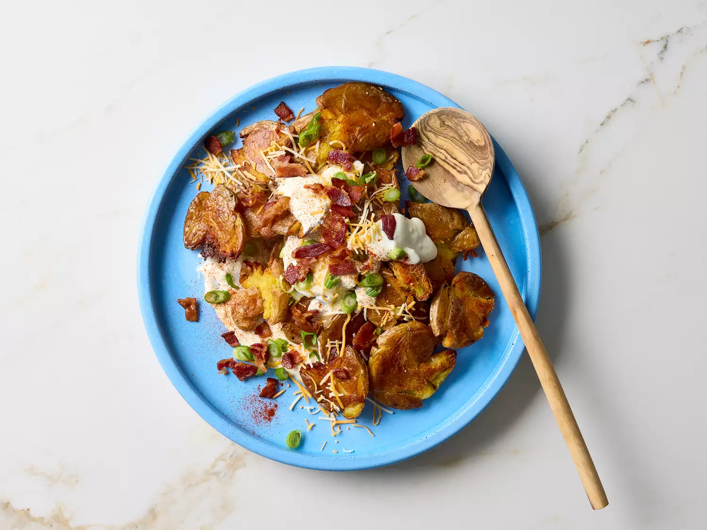

Home
Loaded Potato Salad Recipe

Photo by Jake Sternquist / Food Styling: Charlie Worthington / Prop Styling: Gabriel Greco
Description
This loaded smashed potato salad is a delicioius side dish. Smashed potates are crisp on
the edges and creamy in the middle and are paired with cheese, bacon, green onions, and
a jazzed up sour cream mixture.
Ingredients
- 1 1/2 pounds potatoes
- 1/4 cup olive oil
- 1/2 teaspoon freshly ground black pepper
- 1/4 teaspoon salt
- 1/4 cup sour cream
- 2 cloves garlic, minced
- 2 teaspoons cider vinegar
- 1/2 teaspoon white sugar
- 1/4 cup shredded triple Cheddar cheese blend
- 4 slices bacon, crisp cooked and crumbled
- 2 tablespoons sliced green onions
- paprika to taste
Steps
-
Gather all ingredients. Line a rimmed baking sheet with foil and drizzle with 2
tablespoons olive oil.
-
Place potatoes in a 3-quart saucepan and add enough water to cover potatoes
by 2 inches. Bring to a boil over high heat; reduce heat to medium. Simmer until
tender, 12 to 15 minutes. Drain well and arrange in an even layer on the
prepared baking sheet.
-
Preheat the oven to 425 degrees F (220 degrees C).
-
Using the bottom of a measuring cup or drinking glass, smash each potato to
1/4- to 1/2-inch thickness, taking care not to fully break them apart. Drizzle with
1 tablespoon olive oil and sprinkle with 1/4 teaspoon pepper, and salt.
-
Roast potatoes until beginning to crisp on the bottoms, 25 to 30 minutes.
-
Meanwhile, whisk together sour cream, remaining 1 tablespoon olive oil, garlic,
vinegar, sugar, and remaining 1/4 teaspoon pepper.
-
Turn potatoes and continue roasting until bottoms are crispy, about 15 minutes
more.
-
Spoon half of the sour cream mixture onto the center of a serving platter and
spread out to an even layer. Top with the crisp smashed potatoes, arranging
them in a pile. Evenly spoon the remaining sour cream mixture over the
potatoes and top with cheese, bacon, green onions, and a sprinkle of paprika.